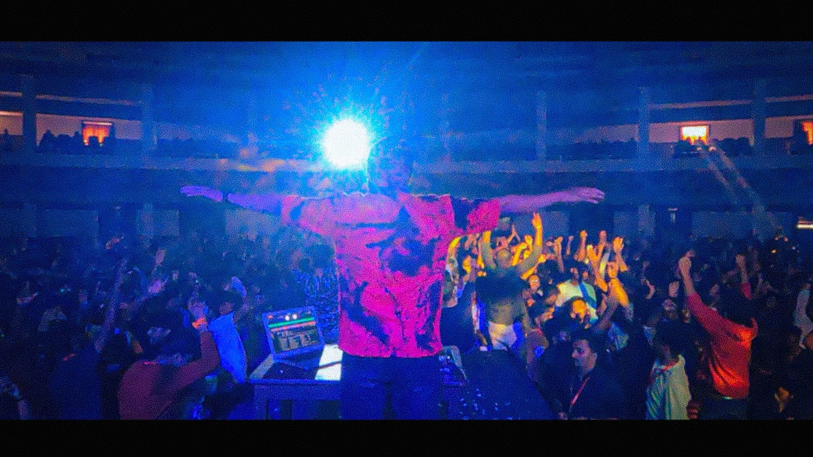
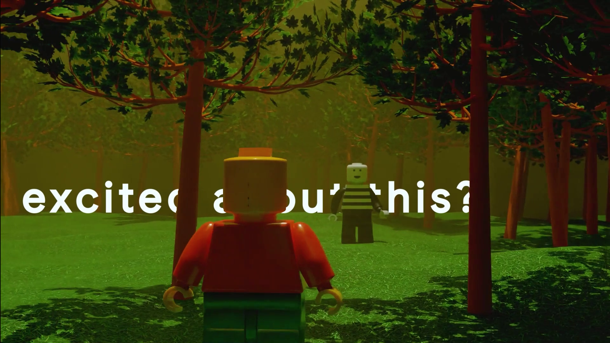
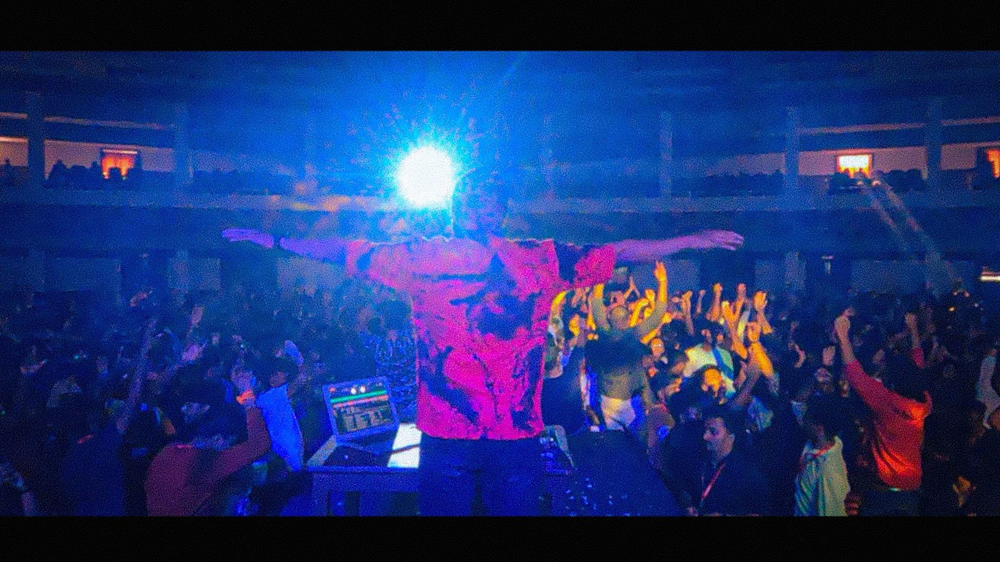
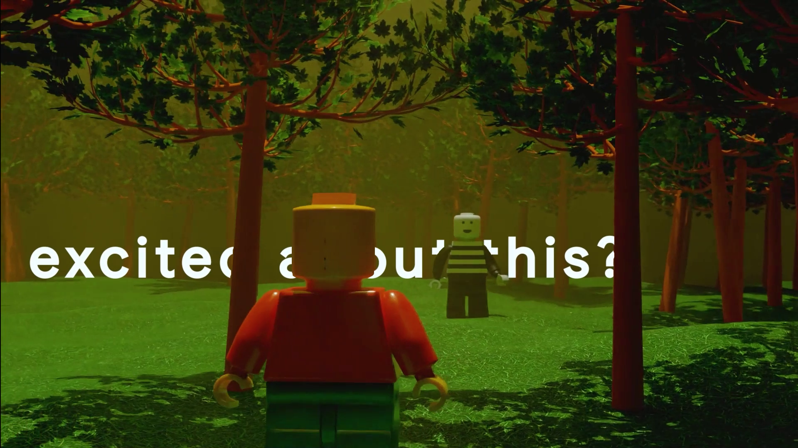

About Me
Possessing a
meticulous eye for detail
and an unwavering passion for storytelling,
I transform raw footage into compelling
visual masterpieces
through pioneering editing techniques and an array of distinctive styles.
- - Precision and Perfection
- - Innovative Techniques
- - Versatile Styles
- - Engaging Storytelling
A glimpse into my projects involving complex timelines and 3D tracking.
.jpg) 




Curated Projects
Crossroads'23 Promo

The Last Fight
Revving Up
Jaguar F-Type
Lé debut'23 Aftermovie
Lé debut'23 Promo
Define'22 Aftermovie
Between the Beats
Crossroads'22 Aftermovie
Crossroads'23 Promo
The Brief
Crossroads'23 was the latest iteration of the beloved techno-cultural fest of Mar Baselios College of Engineering and Technology. Having crossed expectations the previous time, we were covered with much more of an expectation to keep and increase the hype for the event.
Overview:
Our aim was to create a promotional video that captured the essence of returning to one's roots while maintaining a cultural-futuristic atmosphere. The focus was on visual storytelling, utilizing aesthetic shots to convey the concept of home and its significance. This case study explores the creative approach, planning, and execution of the project.
Concept and Theme:
The theme for this iteration was "Returning to the Real World," a shift from the previous dream-based concept. The team decided to bring the brand closer to its cultural roots while infusing a futuristic vibe. The core idea was to explore the concept of "home" and what it meant to different individuals. The project aimed to showcase the diverse elements that contributed to the sense of home, such as street views, people, transportation, and nature.
Creative Direction:
The creative direction was clear from the beginning, emphasizing the importance of visual storytelling. The goal was to evoke emotions and create a connection with the audience by offering pleasing and aesthetic shots. The promo was carefully designed to be cinematic, with a focus on subliminal messages that gradually built excitement. The team deliberately avoided aggressive marketing tactics, instead opting for a calm and introspective approach.
Narration and Voiceover:
The voiceover played a pivotal role in the promo. The character's soothing voice guided viewers through the visual journey, adding depth to the storytelling. The narration complemented the visuals, underscoring the emotional aspect of the concept of "home" and its significance in each person's life.
Shooting Process:
The project was shot in a single day, efficiently utilizing the available time and resources. The concept was thoroughly planned before the shoot, ensuring a smooth execution. Shots were carefully curated to include various elements of home, such as street-views, public transportation, bustling streets, and serene natural landscapes.
Key Highlights:
- Visual storytelling approach: The promo leaned heavily on the power of visual storytelling, allowing the shots to convey emotions and meaning without excessive narration.
- Gradual buildup of hype: By maintaining a calm and serene atmosphere throughout the promo, the team successfully built anticipation, leading to a powerful impact at the end with the brand logo reveal.
- Showcasing cultural roots: The careful selection of shots showcased the cultural aspects of "home," reinforcing the brand's connection with its roots.
- The narration: The voiceover added an emotional touch, making the promo resonate with the audience on a personal level.
Outcome and Reception:
The promo "Crossroads: A Cinematic Journey Home" received an overwhelmingly positive response from the brand's audience. The cinematic approach and cultural-futuristic theme resonated well, eliciting a sense of nostalgia and connection. The video successfully generated hype around the brand without overtly pushing for attention, making it a unique and memorable promotional piece.
Conclusion:
With this project, we were able to demonstrate the power of visual storytelling and a subdued yet impactful marketing approach. By focusing on the concept of "home" and its cultural significance, the promo effectively connected with the audience. Through careful planning and execution, the team created a captivating and emotionally resonant video, successfully promoting the brand's identity and message.
The Last Fight
The Brief
As director, I helmed “The Last Fight” a captivating trailer embodying college camaraderie and conflict. Through strategic direction, I orchestrated a gripping narrative, culminating in a climactic showdown over a lunchtime dispute. This project showcases my ability to engage audiences with compelling storytelling and cinematic flair, earning acclaim for its immersive portrayal of human dynamics on campus.
Overview:
In "The Last Fight" the plot revolves around a group of college friends who gather for their daily lunch break. The harmony of their routine is disrupted when one friend greedily takes an unfair share of food, sparking a chain of events that escalate into a heated confrontation. As tensions rise and tempers flare, loyalties are tested, and friendships are pushed to their limits. The trailer culminates in a dramatic showdown between the friends, highlighting themes of betrayal, justice, and the complexities of human relationships amidst the chaos of college life.
Concept and Theme:
“The Last Fight" encapsulates the rollercoaster of college friendships within the span of a lunch break. As one friend's selfish act triggers a cascade of conflict, the trailer delves into themes of loyalty, justice, and the delicate balance of camaraderie. Through humor and drama, it paints a vivid portrait of the chaotic yet relatable dynamics of young adulthood, where trivial disputes can escalate into epic showdowns, revealing the complexities of human relationships in the process.
Creative Direction:
In directing "The Last Fight” I focused on capturing the essence of college camaraderie and conflict within a concise timeframe. Employing dynamic camera work and sharp editing, I aimed to maintain a brisk pace while emphasizing the escalating tensions among the characters. By balancing humor with genuine emotion, I aimed to create a relatable and entertaining portrayal of the complexities of friendship, ensuring that every shot contributes to the overall narrative impact.
Editing:
I strategically utilized title cards to introduce the two main actors and myself as the director. These title cards were seamlessly integrated into the narrative flow, enhancing the viewer's engagement while providing clarity on the key players involved. By punctuating pivotal moments with these introductions, I aimed to establish a sense of anticipation and investment in the characters and their conflict. Additionally, I ensured that the editing maintained a cohesive rhythm, allowing the story to unfold smoothly while maximizing the impact of each scene.
Outcome and Reception:
This video exceeded expectations, garnering a total of 20k views and continuing to attract attention. The video sparked lively engagement, with numerous comments and reshare across social media platforms. Audiences praised its relatable storyline, dynamic direction, and comedic timing, resulting in a growing fanbase and sustained viewership. The overwhelmingly positive response underscored the trailer's ability to resonate with a wide audience, cementing its status as a standout example of engaging storytelling in the digital age.
Conclusion:
In conclusion, "The Last Fight" stands as a testament to the power of compelling storytelling and creative direction. From its inception to its reception, every aspect of this project has been driven by a commitment to capturing the essence of college camaraderie and conflict in a concise and entertaining format. Through dynamic direction, strategic editing, and a relatable narrative, the trailer has resonated with audiences, earning widespread acclaim and fostering a vibrant online community. As director, I am proud to have brought this vision to life and look forward to continuing to create engaging content that entertains and inspires audiences worldwide.
Revving Up
The Brief
Covering the superbike show was an exhilarating experience, seeing these powerful machines up close for the first time. The roar of their exhausts and the sight of them in action were a videographer's dream. In editing, I aimed to capture this adrenaline rush by using fast cuts and smooth, subtle transitions set to Travis Scott's "My Eyes." The result is a dynamic, high-energy video that immerses viewers in the event's excitement without them noticing the scene changes.
Overview:
Covering the superbike show was a thrilling experience, filled with the roar of powerful engines and sleek designs. Using Travis Scott's "My Eyes" as the soundtrack, I edited the footage with fast cuts and seamless transitions to capture the event's high energy and excitement. The result is a dynamic video that immerses viewers in the adrenaline-fueled atmosphere.
Concept and Theme:
The concept behind the video was to capture the raw energy and excitement of the superbike show. Using Travis Scott's "My Eyes" as the musical backdrop, the theme focused on speed and seamless motion. Fast cuts and smooth transitions were employed to create a dynamic and immersive experience, ensuring viewers felt the adrenaline and thrill of the event as if they were there in person.
Creative Direction:
From a director's perspective, my goal was to capture the superbike show as an exhilarating spectacle. Seeing these high-performance machines for the first time, I focused on filming close-up shots that emphasized their speed, power, and intricate details. By positioning myself strategically, I aimed to capture the raw energy and excitement of the event, ensuring that every shot conveyed the adrenaline and intensity of experiencing these superbikes up close.
Editing:
Approaching the editing process, my objective was to translate the adrenaline-fueled atmosphere of the superbike show into a captivating visual narrative. With a plethora of footage showcasing the sleek designs and thunderous exhaust notes, I meticulously curated each frame to maintain a dynamic and engaging pace. Employing fast cuts and subtle transitions, I aimed to seamlessly blend scenes together, allowing viewers to feel the exhilaration of the event without missing a beat. Every edit was meticulously crafted to ensure that the video flowed seamlessly, immersing the audience in the excitement of the superbike showcase from start to finish.
Outcome and Reception:
The outcome of the video exceeded expectations, garnering a staggering 10.6k views and sparking a wave of positive feedback from viewers. The high-energy editing and pulsating soundtrack resonated with audiences, drawing them into the heart-pounding world of superbike excitement. Comments poured in, praising the immersive experience and dynamic storytelling, with many expressing a desire to attend similar events in the future. The overwhelming reception underscored the success of capturing the raw thrill and intensity of the superbike show, leaving a lasting impression on viewers and fueling anticipation for future projects.
Conclusion:
In conclusion, the superbike show video achieved remarkable success, amassing 10.6k views and eliciting an overwhelmingly positive response from viewers. Through meticulous direction and editing, the video effectively conveyed the adrenaline-fueled atmosphere of the event, captivating audiences and leaving a lasting impression. This outcome underscores the power of immersive storytelling in engaging and resonating with viewers, setting the stage for future projects to continue pushing boundaries and thrilling audiences worldwide.
Jaguar F-Type
The Brief
For the TMS Productions contest, I edited a video using raw 4K and 1080p footage of the new Jaguar F-Type. My goal was to tell a compelling story highlighting the car's elegance and power. I utilized various footage types, including stills for design details, drone shots for dynamic aerial views, and moving shots for performance scenes. Through color grading, smooth transitions, and impactful sound design, I crafted a visually captivating and emotionally engaging narrative that showcases the F-Type's luxurious and high-performance nature.
Overview:
For the TMS Productions contest, I had one week to edit a video featuring raw 4K and 1080p footage of the new Jaguar F-Type. My objective was to create an engaging narrative that emphasizes the car's elegance and power. I used a mix of still shots for intricate design details, drone shots for sweeping aerial views, and moving shots to capture the vehicle's performance. The final video was shared on Instagram for evaluation, incorporating copyright-free music from their provided list. By applying color grading, seamless transitions, and a compelling sound design, I produced a visually striking and emotionally resonant portrayal of the F-Type's luxury and high-performance capabilities.
Concept and Theme:
The concept for this project revolves around showcasing the Jaguar F-Type as the epitome of luxury and performance. The video aims to captivate viewers by highlighting the car's sleek design, powerful presence, and exhilarating driving experience. Through a combination of various shot types and meticulous editing, the video tells a story that is both visually stunning and emotionally engaging.The overarching theme of the video is "Elegance in Motion." This theme is conveyed through dynamic visuals and a carefully selected soundtrack, emphasizing the harmony between the F-Type's sophisticated aesthetics and its high-performance capabilities. The video contrasts serene, detailed still shots with thrilling, fast-paced driving sequences, creating a narrative that celebrates the dual nature of the Jaguar F-Type as both a luxurious and a high-octane vehicle.
Editing:
For this project, I utilized Adobe Premiere Pro and After Effects for the primary editing and visual effects, and DaVinci Resolve for color grading. The raw footage included both daytime and night shots, allowing me to highlight the Jaguar F-Type's versatility and elegance in various lighting conditions. In Premiere Pro, I arranged the footage to create a cohesive narrative, using After Effects for sophisticated transitions and special effects. Color grading in DaVinci Resolve was crucial for enhancing the visual appeal, ensuring consistency and vibrancy across all shots. This meticulous editing process resulted in a polished, engaging video that effectively showcased the F-Type’s luxurious design and high-performance capabilities.
Outcome and Reception:
Even though I did not win the TMS Productions contest, the outcome was overwhelmingly positive. The video received a significant amount of praise and engagement on Instagram, with many viewers leaving positive reviews and comments. The feedback highlighted the seamless editing, stunning visuals, and compelling storytelling. The use of varied footage types and effective color grading were particularly appreciated, showcasing my skills in Premiere Pro, After Effects, and DaVinci Resolve. This project not only demonstrated my ability to create a high-quality, professional video under a tight deadline but also enhanced my portfolio with a well-received piece.
Conclusion:
In conclusion, my participation in the TMS Productions contest provided a valuable opportunity to showcase my video editing skills and creativity. Despite not securing the top prize, the project yielded a positive outcome with widespread acclaim and engagement from viewers. Through meticulous editing using Adobe Premiere Pro and After Effects, coupled with precise color grading in DaVinci Resolve, I crafted a visually captivating narrative that effectively highlighted the Jaguar F-Type's elegance and performance. The project not only served as a testament to my capabilities as a video editor but also contributed to the enrichment of my portfolio. Moving forward, I am eager to continue refining my craft and tackling new challenges in the realm of video production.
Lé debut'23 Aftermovie
The Brief
Creating an aftermovie for Le Début, the flagship event hosted by Google Developer Student Clubs MBCET, was a fantastic way to capture and showcase the highlights of the event. An aftermovie was essentially a short and engaging video that recapped the most memorable moments, energy, and enthusiasm of the occasion.
Key Elements
Focusing on Emotions and Energy
The aftermovie we produced was meticulously crafted with the objective of encapsulating the raw emotions and dynamic energy that permeated the event. Through our lens, we managed to capture the exhilarating excitement that was palpable in the air, the ever-present curiosity that sparked every conversation, and the sheer joy that painted the faces of each and every attendee. Furthermore, we made sure to focus not just on the individuals, but also on the meaningful interactions that took place. This included the lively exchanges between participants and speakers, fostering an environment of learning and engagement, which we believe was a crucial element of the event's overall appeal and success.
Curating the Footage
Following the conclusion of the event, I dedicated a significant amount of time to meticulously reviewing all the video footage we had captured. My goal was to isolate and select those clips that were not only impactful and visually appealing, but also encapsulated the essence of what we were trying to convey. We were searching for those rare, precious moments that truly reflected the spirit and ethos of Le Début, those instances that perfectly captured the heart and soul of our event.
Editing with Precision
In the process of creating the aftermovie, I utilized a combination of video editing software, primarily Adobe Premiere Pro and After Effects. These tools were instrumental in enabling me to craft a film that was both compelling and aesthetically pleasing. In an effort to hold the viewers' attention, I strategically designed the video to be short and dynamic, with an optimal length of approximately 1 to 1.5 minutes. I believe brevity is key in modern digital content, as it respects the viewer's time while still conveying the desired message. To further enhance the viewing experience and to create a cohesive aesthetic, I added background music. The chosen tracks were carefully selected to complement not just the visual content but also the overall mood and pace of the video. This fusion of sight and sound served to create a more immersive experience for the viewer.
Narrating a Story
In the preparation of the aftermovie, I meticulously organized the gathered footage. I placed them in a specific sequence, either in chronological order to give a sense of the event's timeline or grouped thematically to create a consistent narrative thread. This approach ensured that the aftermovie was not just a random collection of scenes, but a coherent and engaging story that truly represents the essence of the event. This narrative journey began with an engaging introduction, carefully designed to immediately capture the viewer's attention and set the tone for the rest of the movie. From there, we gradually built up the excitement, using a combination of music, visuals, and pacing to ensure a captivating viewing experience.
Highlighting GDSC MBCET
In my role, I took special care to make sure that the aftermovie provided a significant spotlight on the Google Developer Student Clubs MBCET. To fully represent the club, their distinctive logo was incorporated into the aftermovie, along with specific branding elements that resonate with their identity. Furthermore, we made it a point to include comprehensive coverage of any specific initiatives, projects, or events that they were deeply involved in. This approach was designed to present a holistic image of the club's activities and contributions, and to ensure that their impact was clearly communicated through the aftermovie.
Outcome and Reception:
Finally, in the aftermath of the event, we took the time to gather feedback specifically on the aftermovie. This was not just a formality but a crucial step in our process. By understanding what aspects resonated well with the audience, as well as identifying the areas that did not quite hit the mark, we were able to gain a comprehensive view of the overall reception. This feedback proved to be invaluable as it provided us with core insights and key learnings that we could leverage for the creation of aftermovies for our future events. It allowed us to continuously improve and refine our approach, ensuring that each aftermovie is better than the last.
Conclusion:
The aftermovie was meticulously crafted with the primary goal of capturing the distinctive atmosphere that pervaded Le Début, effectively showcasing why attendance at such events was not just a frivolous pastime, but an unforgettable experience that leaves a lasting impression. From conceptualization to execution, every step was done with careful planning and innovative editing techniques. This wasn't just a simple video clip, but rather a masterfully curated visual narrative that encapsulated the essence of the event. As such, it served as a potent marketing instrument that went beyond mere promotion. It brought the unique charm and ethos of GDSC MBCET to life, compellingly conveying what sets it apart and why it's worth engaging with. By doing so, it didn't just passively showcase the event, but actively worked to pique interest, spark curiosity, and ultimately attract a larger number of participants for future events. It is a testament to the power of well-crafted visual storytelling as a tool for engagement and promotion.
Lé debut'23 Promo
The Brief
"Le Debut" is an exciting event organized by the Google Developer Student Clubs (GDSC) at Mar Baselios College of Engineering and Technology (MBCET) specifically for freshers. This event aims to introduce new students to the myriad opportunities available beyond the standard curriculum, helping them discover various technical and non-technical avenues they can explore during their college years. Through engaging sessions, workshops, and interactions with experienced peers and industry experts, "Le Debut" provides a platform for freshers to gain insights into the dynamic world of technology and innovation, fostering a spirit of curiosity and ambition that will drive their personal and professional growth throughout their time at MBCET.
Key Elements
Introduction to GDSC
An overview of the Google Developer Student Clubs, its mission, and how it can benefit students.
Workshops and Sessions
Interactive workshops and sessions on various topics like coding, app development, web development, and more.
Industry Expert Talks
Insights from industry professionals and alumni about current trends and future prospects in technology.
Networking Opportunities
Time for students to interact with seniors, peers, and industry experts to build valuable connections.
Showcase of Projects
Presentation of successful projects and initiatives by senior students to inspire and motivate freshers.
Q&A Sessions
Open forums for freshers to ask questions and clarify doubts about their academic and professional journey.
Resource Sharing
Information on useful resources, tools, and platforms that can aid in learning and development.
Club Activities
Details about various club activities, events, and competitions that students can participate in throughout the year.
Outcome and Reception:
The outcome of "Le Debut" was overwhelmingly positive, with a significant number of freshers showing keen interest and actively participating in the event. The engaging workshops, insightful talks by industry experts, and the opportunity to network with seniors and peers resonated well with the attendees, leading to a high rate of applications for various clubs and activities. The showcase of projects and resource sharing sessions further fueled their enthusiasm, motivating many to embark on their own learning and development journeys. Overall, the event not only met but exceeded expectations, setting a vibrant and encouraging tone for the freshers' college life at MBCET.
Conclusion:
In conclusion, "Le Debut" successfully achieved its goal of introducing freshers at MBCET to the diverse opportunities available beyond the standard curriculum. The event's well-structured sessions, expert insights, and networking opportunities created an engaging and informative experience for the new students. The enthusiastic reception and high participation rates highlight the event's impact, inspiring many to explore and strive for excellence in various technical and non-technical fields. As a result, "Le Debut" not only laid a strong foundation for the freshers' future endeavors but also strengthened the vibrant community of learners and innovators at MBCET.
Define'22 Aftermovie
The Brief
Define was a 24-hour offline hackathon held to channelize the creative minds and bring out solutions for actual problems that exist in this real world.
The After movie was meant to be a visual representation of the vibrant and dynamic atmosphere of Define, which took place from 5-7 November. It had to capture the energy, excitement, and diversity of the event, highlighting the various activities, performances, and experiences that made Crossroads MBCET a memorable experience for participants and attendees.
Objective
Creating an aftermovie for "Define," the 24-hour offline hackathon, was an exhilarating task that aims to encapsulate the essence and spirit of this vibrant event. The aftermovie served as a visual storyteller, capturing the energy, excitement, and diversity that defined "Define" and immortalizing the unforgettable moments experienced by participants and attendees.
Highlighting Activities
The aftermovie showcased a diverse range of activities, including workshops, presentations, team collaborations, and moments of celebration. This created a comprehensive representation of the hackathon's multifaceted experience.
Music Selection
The right soundtrack was vital to evoke the desired emotions and enhance the overall impact of the video. The music complemented the visuals and conveyed the event's atmosphere.
Color Grading and Enhancements
Color grading added consistency and polish to the video, while any necessary visual enhancements were incorporated to elevate the overall production value.
Finalization and Distribution
After incorporating feedback and making necessary adjustments, the aftermovie was finalized and prepared for distribution. It was shared on social media platforms, event websites, and other channels to reach a broader audience and preserve the memories of "Define."
Conclusion
In the end, the aftermovie became a cherished memento of "Define," immortalizing the talent, innovation, and community spirit that made the hackathon a truly exceptional experience for everyone involved.
Between the Beats
The Brief:
In my final year of college, during the Christmas celebration, we decided to showcase our dance skills for one last performance in front of everyone. Motivated by this special occasion, I took on the task of creating a video that captures the essence of our performance with a seamless and buttery-smooth transition from our practice sessions to the grand stage.
Overview:
My goal was to commence the video within the practice session and strategically transition to the main stage at an opportune moment when the dancers were performing. Through careful editing, I aimed to seamlessly connect these two scenes, capturing the progression from rehearsal to the grand stage performance.
Concept and Theme
The concept revolves around showcasing the evolution of a dance performance, starting from the dedicated practice sessions to the grand and vibrant stage performance. The theme emphasizes the journey, growth, and culmination of the dancers' efforts, celebrating the final-year Christmas celebration at the college. The video aims to capture the essence of the dancers' dedication and the festive spirit of the occasion, creating a memorable and visually engaging narrative.
Direction
I had to replicate the exact same motions during both the practice session and the main stage performance to ensure a seamless transition in the video. The camera movements were crucial and needed to be precisely replicated, as there was no room for error on the main stage. Every action and angle had to be carefully executed, preserving the consistency for a flawless transition from the practice session to the grand finale.
Editing
While editing, I utilized the first clip, the practice session, as a reference for continuity. In the second video, corresponding movements were scaled correctly, and I strategically cut the footage at the point where the dancer snaps their fingers. To maintain a seamless motion, I incorporated motion blur for a few frames. The audio during the initial segment was from the practice session recording, seamlessly transitioning to the original, pristine audio after the snap. To enhance the impact, I showcased the dancers' best moves post-transition and concluded the video in a concise 15 seconds, aiming for a short and sweet presentation without any lag.
Outcome and Reception
The outcome exceeded expectations, with a tremendously positive response and widespread acclaim. The video's success was evident as it garnered over 13.4k views on Instagram. Many viewers were captivated by the seamless transition and expressed awe, prompting questions about whether it was pre-planned. The positive feedback and engagement reinforced the impact of the carefully crafted video, leaving a lasting impression on the audience.
Conclusion
In conclusion, this video exceeded expectations, amassing over 13.4k views on Instagram. The seamless transition and meticulous editing sparked awe and curiosity, leaving a lasting impression. This project stands as a testament to thoughtful execution, making our final-year Christmas celebration unforgettable.
Crossroads'22 Aftermovie
The Brief:
The After movie must be a visual representation of the vibrant and dynamic atmosphere of Crossroads 2022, which took place from 26-28 June. It should capture the energy, excitement, and diversity of the event, highlighting the various activities, performances, and experiences that made Crossroads MBCET a memorable experience for participants and attendees.
Objective
The task at hand is to encapsulate the diverse and vibrant spirit of Crossroads MBCET, translating its essence into a visually captivating experience for viewers. This involves delving deep into the core of what makes Crossroads MBCET unique, understanding its values and ethos, and then reflecting these in a visually compelling way. We aim to create an experience that not only captures attention but also resonates with viewers on an emotional level, creating a lasting impression of what Crossroads MBCET truly stands for.
Visual Style
The aftermovie that we are crafting will be a feast for the eyes, featuring a multitude of vibrant colors that capture the spirit of the event. Our editing style will rely heavily on fast cuts, which will not only keep the pace lively and engaging but also allow us to showcase a variety of scenes and moments. In addition to this, we will employ smooth transitions to fluidly connect these different segments, resulting in a seamless viewing experience. Our primary goal is to create a visually captivating and energetically charged representation of the event. To ensure that the viewer's immersion is never broken, we will be diligent in avoiding any form of lag throughout the entire video.
Storytelling
The aftermovie achieved a remarkable feat by crafting a compelling narrative that fully engaged its viewers and artfully highlighted the most unforgettable aspects of Crossroads MBCET. By combining visual storytelling techniques with a keen understanding of the event's unique spirit, it managed to provide a visually captivating experience that encapsulated the essence of the event. This was not merely a recap of the proceedings, but rather a carefully constructed narrative that allowed viewers, both those who attended and those who didn't, to truly grasp the energy, excitement, and emotion that pervaded Crossroads MBCET.
Music Selection
For the aftermovie, we needed a very energetic music to complement the fast cuts and bring in a nostalgic feeling of the event. Therefore two tracks (Aadiyillallo, and Radioactive), with similar beats were selected since they had a strong beat and upbeat tempo to create a lively and energetic atmosphere. Additionally, they blended well, and the first one incorporated elements of nostaligia (being a the most exciting performance of the previous iterations band performance), and the event's theme/culture and consequently helped enhance the overall experience of the aftermovie.
Outcome and Reception
The After movie, capturing the vibrant and dynamic atmosphere of Crossroads MBCET 2022, surpassed all expectations with its remarkable outcome and reach. As it premiered to an enthusiastic audience, the film resonated deeply with viewers, transporting them back to the exhilarating three-day event. Its vivid portrayal of the energy, excitement, and diversity of Crossroads MBCET left a lasting impact, stirring emotions and igniting a sense of nostalgia among participants and attendees.
Conclusion
Beyond the festival grounds, the After movie garnered widespread acclaim and appreciation, drawing a broad audience from various corners of the world. Through the power of captivating storytelling and stunning visuals, the film amplified the festival's essence, making Crossroads MBCET a cherished and unforgettable experience for those who witnessed it and inspiring countless others to eagerly await the next edition.